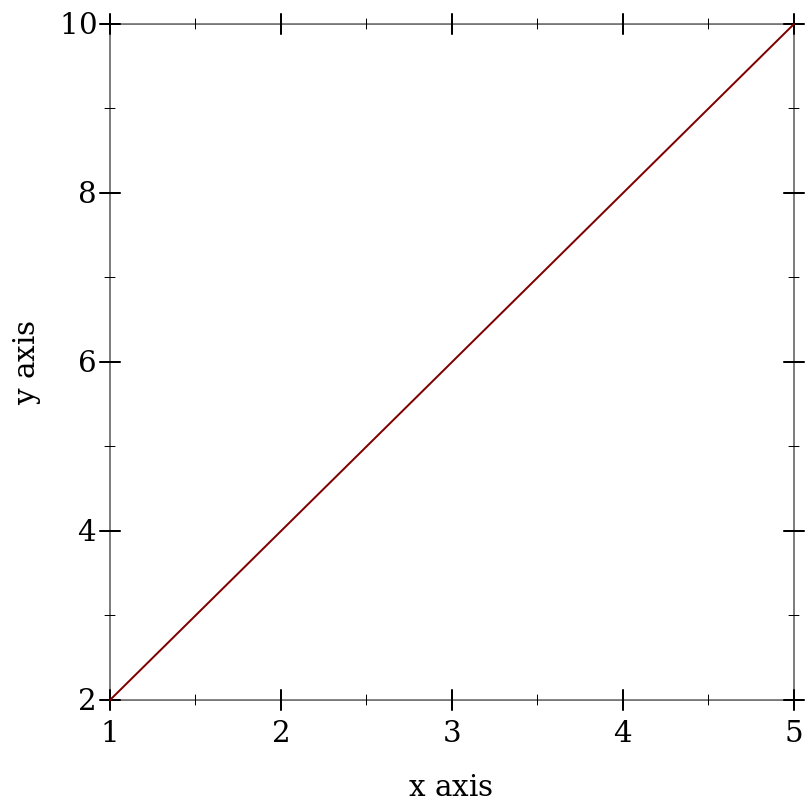
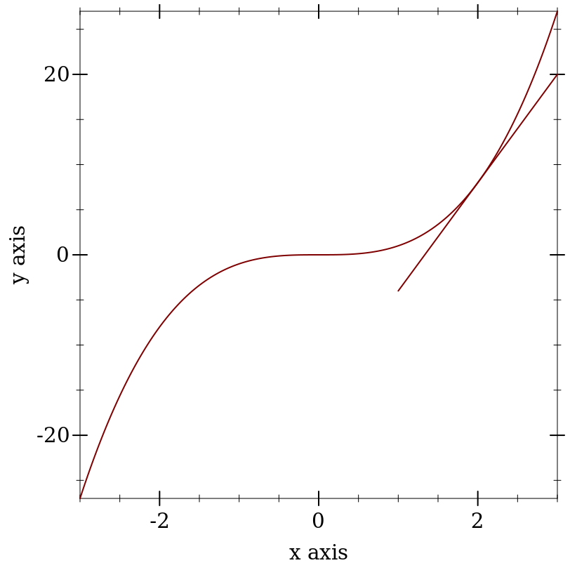
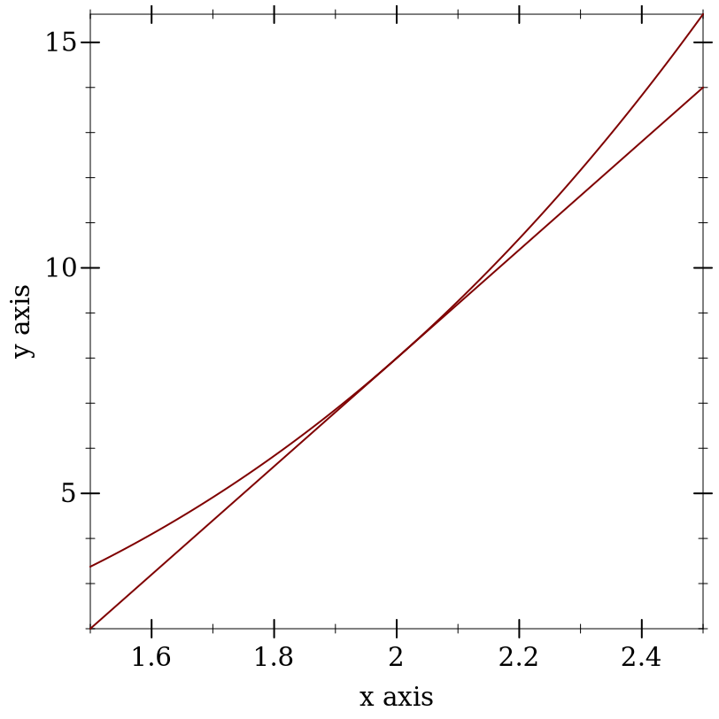

2 Derivatives are Slopes
What is a slope?
When in doubt return to definition.
Deriving the definition of a derivative.
What is the definition of a derivative?
Digression: Use your computer as a tool for exploration
Example:
> (begin (define xs (list 1 2 3 4 5)) (define ys (list 2 4 6 8 10)) (plot (lines (map vector xs ys)))) 


Derivatives are Instantaneous Slopes
You pick two points that are "close enough" and you get an answer that is "close enough." If your answer isn’t "close enough" then you move your points closer, until /in the limit/ there is an infinitesimal distance between them.
Definition of the Derivative
\frac{df}{dx} = \lim_{h \to 0}\frac{f(x + h) - f(x)}{(x + h) - x}